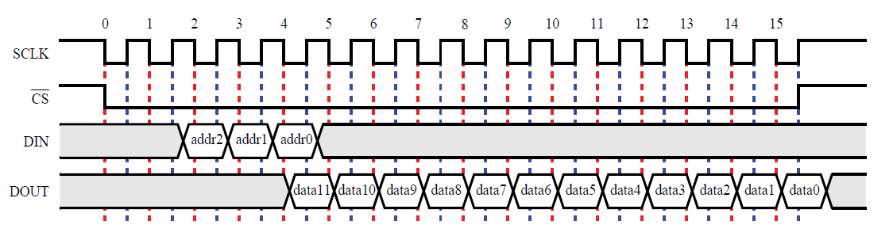

Task 2 A : Analog to Digital Converter (ADC)
1. Introduction
In this theme, we will be using the De0 Nano development board which contains an ADC128S022 low power, eight-channel CMOS 12-bit analog-to-digital converter. This ADC provides conversion throughput rates of 50 ksps to 200 ksps. It can be configured to accept up to eight input signals at inputs IN0 through IN7. These eight input signals are connected to the 2x13 header, as shown in figure below. The remaining I/Os of the 2x13 header are a DC +3.3V (VCC33), a GND and 13 pins, which are connected directly to the Cyclone IV E device.
Important : Read Using DE0-Nano ADC as this document contains necessary information for successfully completing this task. This is mandatory.

In this task, we will be designing a 3-channel ADC Control module which will send channel addresses to on-board ADC128S022 and fetch digital data of analog value present on that corresponding channel. The on-board ADC128S022 will convert it to its equivalent 12-bit digital value which can be read by the FPGA (using ADC Control module).
We will be communicating with the ADC128S022 using SPI Protocol. It operates in a 16 cycle frame. The user is required to provide the SCLK, CS and DIN to the ADC128S022 and capture the DOUT signal as it is serially transmitted.

The DOUT signal provides the 12-bit converted value of the selected channel. On power-up, channel 0 is selected by default, while subsequent reads will use the address provided in the previous operational frame. The data bits are transmitted in descending order, such that the highest-order bit is delivered first. It is captured by the user on the rising edge of SCLK.
The DIN signal is used to select the channel to be converted in the following frame. It is delivered in descending order, and is captured by the ADC128S022 on the positive edges of SCLK. In order to avoid potential race conditions, the user should generate DIN on the negative edges of SCLK.
CS should be lowered on the first falling edge of SCLK and raised on the last rising edge of an operational frame. The SCLK frequency is limited to a range of 0.8 to 3.2 MHz in which the ADC will function correctly.
2. Interpretation of ADC output and Analog Input
ADC128S022 outputs a 12-bit value based on the analog voltage at its channel. ADC output of 000000000000 corresponds to 0 V and an output of 111111111111 corresponds to 3.3 V (the reference voltage of the ADC128S022 is 3.3 V, hence it's maximum digital output is for 3.3V).
Hence,
Maximum Input voltage = 3.3 V
Highest Output value from ADC128S022 in decimal = 4095 (i.e. 111111111111 in binary)
Voltage represented per LSB in Output (Resolution) = 3.3 V/4095 = 0.805 mV
Now, we know the relation between the ADC128S022 output and Voltage. By simply multiplying the above value i.e. Resolution with the ADC128S022 output (in decimal), we can calculate the voltage at the chosen input channel of the ADC.
Example :
Suppose the output of ADC is '100011111100' (2300 in decimal) then,
Analog Input = 0.805 mV*2300 = 1.85 V
Now suppose, analog input is 2.5 V then,
ADC output = 2.5/0.805 mV = 3105 in decimal = '110000100001' in binary.
Now, you know how to convert the analog input voltage to corresponding 12-bit digital output and vice-versa.
3. Problem Statement
In this task, you will be designing a control module which controls the on-board ADC. Basically, this "control module" sends necessary commands to the on-board ADC which is ADC128S022 and fetches the digital output. Your designed control module should have following inputs and outputs :
| Inputs | Outputs |
|---|---|
| clk_50 | adc_cs_n |
| dout | din |
| - | adc_sck |
| - | d_out_ch5, d_out_ch6, d_out_ch7 (12-bit) |
| - | data_frame (optional) |
- clk_50 : This is 50MHz clock input to the adc control module. All other signals must be synchronized w.r.t this clock.
- dout : This is converted binary data which is received serially by adc control module. This is the digital output from ADC128S022 (outputted serially), so your designed module reads this serial data and outputs 12-bit data (parallel data) on d_out_chX output bus.
- adc_cs_n : Chip Select pin. When low selects the on-board ADC128S022.
- din : This output is used to give ADC_ADDR input to on-board ADC128S022. Refer Datasheet for more information. Use channels 5, 6 & 7.
- adc_sck : This output is given as input to ADC128S022 and it serves as a device clock for the ADC128S022. This clock signal should be 2.5MHz.
- d_out_chX (X = 5,6,7) : 12-bit binary output for channel X i.e. for ADC channel 5 the converted binary output will be available at d_out_ch5.
- data_frame : This is a 2-bit bus which is used only to represent 16-cycle operational frame. This is optional, but it is recommended to use this signal for better visualization of signals.
Important :
- For this task adc_sck = 2.5MHz, ADC channels = 5, 6 & 7 should be followed strictly.
- You are not allowed to use any code or part of the code which is available online.
- You are not allowed to use Nios architecture /IP blocks.
- You must only refer Using DE0-Nano ADC.
- Additionally you can also refer to ADC128S022 datasheet.
Project File : Download TASK 2 A
Steps :
Open adc_control.qpf. You will find adc_control.v file where module is defined. Do not make any changes to input and output ports. Firstly, without writing any logic, perform Analysis & Synthesis (Ctrl+K). Now, Run RTL Simulation. You will see some waveforms in ModelSim window, these are the expected outputs.
Now, implement adc control module which outputs correct din & adc_sck signals, reads dout correctly and outputs the correct 12-bit data on correct output bus d_out_chX. You can create other verilog files in the project but adc_control.v should be the Top Level Entity.
After completing, run RTL Simulation. Actual output should match desired output. For Eg : adc_sck is actual output and adc_sck_exp is the desired or expected output. You can also check ModelSim Transcript window for "No errors" or "Errors" message.
Refer below image to write logic for 3-channel ADC control module.

Note : In above image clock is actually adc_sck and data_ch5 = d_out_ch5 (similarly for other two outputs). Open the image in New Tab to view it better.
Important Reminder : For this task adc_sck = 2.5MHz, ADC channels = 5, 6 & 7 should be followed strictly.
…BestWishes!…